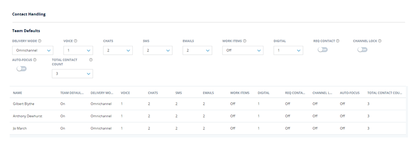
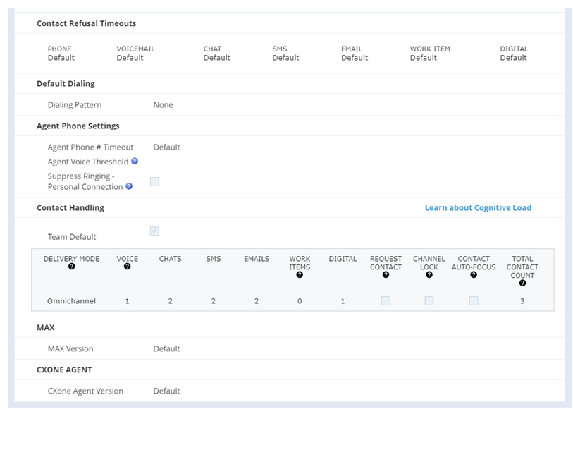

Manage Contact Delivery Settings for Dynamic Delivery
Important: This page is specific to a dynamic delivery routing strategy. If your organization uses a static delivery routing strategy, you can find this information in the static delivery online help.
Dynamic delivery lets you create a unique workload for each team or agent. What you configure for a team is overridden by anything you configure at the agent level. You can have a team configured for single contact handling, where each agent handles one contact from one channel at a time, while one agent on the team is able to handle a voice contact plus a chat contact at the same time.
Manage Dynamic Delivery
Required permissions: Team Edit
You can configure your dynamic delivery routing settings at the team level. These settings apply to all users assigned to the team unless the user has different settings in their profile that override the team settings.

Learn more about fields in this task
| Field | Details |
|---|---|
| Voice | Whether agents can handle 1 voice interaction at a time or voice interactions are turned Off. Voice interactions include inbound calls, manual outbound calls, Personal Connection dialer calls, and voicemails. |
| Chats, Emails, Work Items, SMS, and Digital | The number of interactions an agent can handle at the same time per channel. The maximums are:
If you use Digital Experience:
|
| Req Contact | Disables automatic routing of non-voice, or digital, interactions. Instead, the agent clicks a +1 Contact button in the agent application to add more interactions. They cannot request the type of interaction they receive. The ACD skill and acceleration rules determine what they receive. The agent can continue to request interactions until they meet the maximum or the queue is empty. When this isn't selected, interactions route automatically to the agent. This occurs until the agent is handling their maximum interactions or the queue is empty. This is true even when the agent refuses an interaction. Important: This feature isn't currently supported for Digital Experience channels or the Agent applications. |
| Channel Lock | Temporarily locks an agent to the channel they're currently handling. For example, if the agent configured to handle 2 chat interactions and 1 voice interaction has a Total Contact Count of 3, they can receive one voice or two chat interactions, but not both at the same time. When the agent's interactions have ended, the lock will end. The agent will then be able to receive interactions from any configured channel. |
| Auto-focus | Shifts the agent's view to the new interaction when it is first connected to the interface. |
| Total Contact Count | The maximum number of total interactions an agent can handle at a time. For example, if you set Chats to 5, Emails to 5, and Total Contact Count to 7, the agent would receive a maximum of seven interactions at any given time. Up to five of those seven contacts could be chat contacts and up to five of them could be email contacts. |
Procedure
- Click the app selector
 and select Admin.
and select Admin. - Click Teams.
- Click the team you want to edit.
- Click the Contact Settings tab.
- If you use Salesforce External Routing to route chats and cases to your agents, set the default number of Chats and Emails to Off. Otherwise, move to the next step.
- Set the default number of concurrent interactions for Chats and Emails. Set the default number of maximum concurrent interactions for SMS, Digital, and Work Items you want agents on the team to handle.
- Set the Total Contact Count to the maximum number of interactions of any type you want agents on the team to handle at the same time.
- Toggle on Channel Lock if you want agents to be able to handle different interaction types but only want them to focus on interactions with a single channel at a time.
- Toggle on the Request Contact and Auto-focus options to change the experience agents have in the agent application as needed. Remember that the Request Contact functionality isn't currently supported for Digital Experience channels or the Agent applications.
- If you want any agents on the team to have different settings, you can modify them by setting Team Default to Off for that agent. Then enter a new value for the setting. Settings at the agent level override settings at the team level. Alternatively, you can configure those settings in the ACD User profile.
- Click Done.
Manage Dynamic Delivery Contact Settings at the User Level
Required permissions: ACD Users Edit
Any contact settings you configure for an agent will override the settings you configured at the team level.

Learn more about fields in this task
| Field | Details |
|---|---|
| Contact Refusal Timeout: Phone, Voicemail, Chat, SMS, Email, Work Item, and Digital | The number of seconds the agent can be idle in an active interaction before the interaction times out and transfers to another agent. If you leave any of these blank, the profile inherits the default system value of 45 seconds. Values for refusal timeouts must be between 15 and 300 seconds. If your tenant is enabled for Digital Experience:
|
| Dialing Pattern | The default dialing pattern assigned to the user. A dialing pattern specifies the way each call is dialed. For instance, a dialing pattern can specify that each call must begin with '1'. Agents do not need to a dial a '1' before every call, because the system automatically prepends it to the number dialed. |
| Phone # Timeout | The amount of time an agent's voice path stays connected. This field is set to Default which uses the value specified in the business unit settings. Changing this value overrides the business unit level setting for this user. |
| Agent Voice Threshold | The volume level of the agent's voice. This setting helps to accurately distinguish the agent's voice from background noise. The threshold range is based on a custom volume unit computed by the frequency analyzer. Users with proper permissions can change this value themselves through the Voice Threshold tuning setting in MAX. |
| Suppress Ringing - Personal Connection | When the agent uses a Personal Connection ACD skill, this setting prevents them from hearing a ringing sound before the system answers the call. Instead, the agent first hears audio when they receive the answered call from the network. This setting overrides the skill setting for Treat Progress as Ringing. |
| Maximum Concurrent Chats | Available only in a single-contact handling environment. Specifies maximum number of chats the user may engage in simultaneously. It's either the Team Default, or the maximum number of chats allowed for the team the user belongs to, or a number between 1 and 12. |
| Maximum Email Auto-Parking Limit | Available only in a single-contact handling environment, specifies the maximum number of emails the user may contain in the inbox at one time. It's either the Team Default, or the maximum number of emails allowed for the team the user belongs to, or a number between 1 and 25. |
| Contact Handling: Voice, Chats, SMS, Emails, Work Items, Digital | Available only in a dynamic delivery environment, specifies the maximum number of simultaneous contacts the user can handle. The maximum allowed voice contacts is 1 (including phone and voicemail); chats, 12; emails, 25; work items, 25, and digital, 50. If your tenant is enabled for Digital Engagement:
|
| Request Contact | Available only in a dynamic delivery environment, enables the user to manually request an additional digital (non-voice) contact, if the current state is Working. Important: This feature isn't currently supported for Digital Experience channels or the Agent applications. |
| Channel Lock | Temporarily locks an agent to the channel they're currently handling. For example, if the agent configured to handle 2 chat interactions and 1 voice interaction has a Total Contact Count of 3, they can receive one voice or two chat interactions, but not both at the same time. When the agent's interactions have ended, the lock will end. The agent will then be able to receive interactions from any configured channel. |
| Contact Auto-Focus | Available only in a dynamic delivery, forces MAX to set the active focus to the newest contact after the contact is connected in the interface. |
| Analytics Notifications | No longer used. |
| Analytics API Key | No longer used. |
| MAX Release Preview | Enables the preview version of MAX for the agent in the business unit for the 28-day trial period prior to the official release of the new version. This feature is only available when enabled by your CXone Mpower Account Representative. For more information, see Configuration Tasks. |
Procedure
- Click the app selector and select ACD.
- Go to Contact Settings > ACD Users.
- Click the ACD user profile you want to edit.
- Click the Contact Settings tab.
- Click Edit.
- To customize the agent's individual settings, clear the Team Default checkbox.
- Set the default maximum number of Chats, Emails, SMS, and Work Items you want the agent to handle. SMS is not supported for MAX.
- Set the Total Contact Count to the maximum number of contacts you want the agent to handle concurrently.
- Enable the Request Contact and Auto-focus options as needed.
- Enable Channel Lock if you want agents to be able to handle different interaction types but want them to focus on interactions with a single channel at a time.
- Click Done.